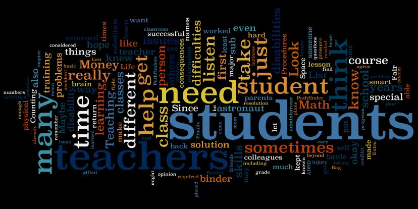
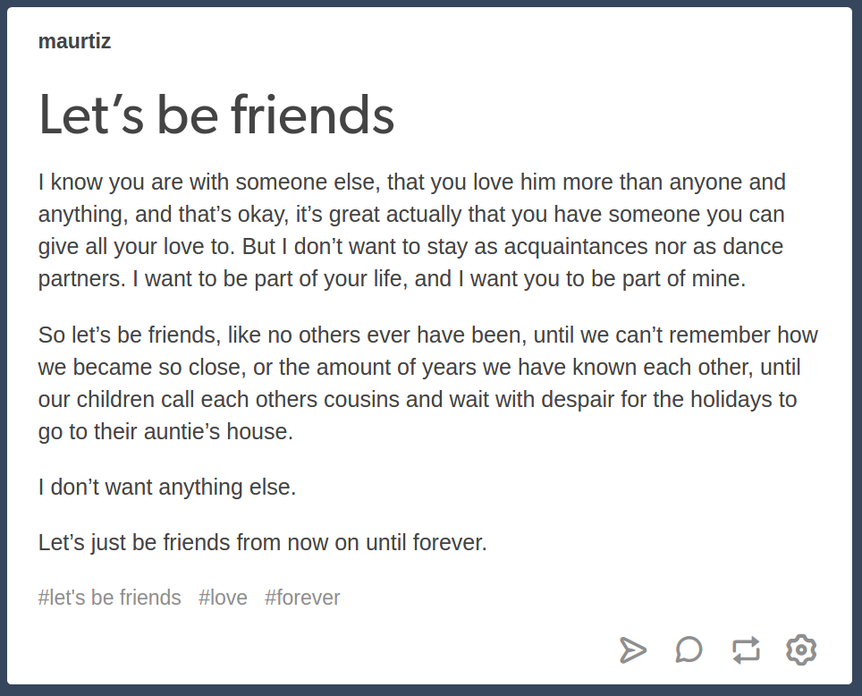

About myself
Hi! My name is Martin and I'm a 21 years old Robotics Engineering Student currently enrolled in UTS and undertaking the 31268 Web Systems class.
I know it's hard for someone to get known through a web page but I'll give you a peek to myself. This are some of the things I love:
-
Programming
I started programming 3 years ago, with my Fundamental of Programming class, in there I learned how to program in C++. After that first approach
to the programming world I went crazy with all the possibilities and wanted more, so I thought myself how to program in Python, the language I feel
more comfortable programming with.
-
Dancing
I've been dancing since I was in middle school, and it's one of the things that I love the most in the world not only because it's my passion but because
it saved me.
-
Teaching

I love sharing with and helping people, and one of the easiest ways to do both at the same time is teaching; I can share my knowledge while helping the other
person solve any problem relating to the discussed topic
-
Writing

I'm not a great writer nor share my writings and usually I write in spanish, my native language, but I have a tumblr account in which I post some of them once
in a century: maurtiz.